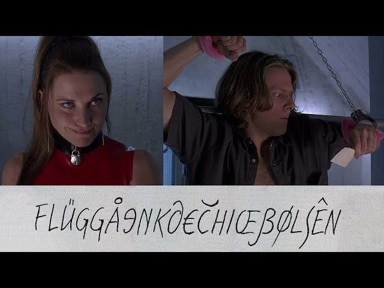

Подорож починається тут
Знайди свою наступну пригоду.
У першій темі ми побачили, що інтерфейс змінюється разом із шириною екрана. Але ширина — лише одна змінна: назви, описи й переклади теж можуть бути різними за довжиною. Дизайнеру важливо розуміти, як блоки поводитимуться з реальним контентом у браузері, а дизайнеру й розробнику — разом узгоджувати цю поведінку.
Якщо інтерфейс розрахований лише на один короткий напис, користувач може побачити обрізаний текст або не зрозуміти дію. Для бізнесу це може означати помилки й втрачені можливості взаємодії з клієнтами.
Переклад не має фіксованого коефіцієнта збільшення: одні написи довші, інші коротші. Перевіряти варто конкретні тексти й доступний простір.
Перемкни мову й порівняй, як змінюються заголовок, опис і напис на кнопці. Одна кнопка має фіксовані розміри, а інша може збільшуватися у висоту.
Забув пароль? Створи новий.
У цьому прикладі надлишок тексту обрізається.
Забув пароль? Створи новий.
Текст може переноситися, а висота — збільшуватися.

ЗамовникДевелоперПоведінка кнопки залежить від мови, контексту й доступного місця.
Однаковий зміст може займати різний простір залежно від мови. Довжина перекладу залежить від конкретної фрази, а не від сталого правила для всіх текстів.
Дунайське пароплавство
Donaudampfschifffahrtsgesellschaft
Німецьке слово означає компанію дунайського пароплавства. Це приклад складного слова: його частини написані разом, тому на вузькому екрані воно може не поміститися без переносу. У браузері зайнята ширина також залежить від шрифту й розміру тексту.
Той самий переклад може вміщатися на широкому екрані, але переноситися на вузькому. Зміни ширину області й обери текст, щоб порівняти обидва чинники.
Знайди свою наступну пригоду.
Шрифти й символи. Перевіряйте, чи шрифт підтримує всі потрібні мови та символи. Якщо ні, браузер використає інший шрифт для частини тексту, і ширина рядків може змінитися.
Напрямок письма. Для мов, які читають справа наліво, змінюється напрямок тексту, а деякі елементи інтерфейсу можуть потребувати дзеркального розташування. Це варто проєктувати й перевіряти разом із носіями мови.
Оберіть наступний крок.
Це спрощений приклад напрямку тексту, а не повна локалізація інтерфейсу.
Значуще фото людей краще подавати окремим зображенням, а не декоративним фоном: так легше керувати його розміщенням і, за потреби, надати текстовий опис. Обрізання все одно потрібно перевіряти для різних екранів.
Текст, вбудований у картинку, складніше перекладати й адаптувати. Для цього прикладу варто розмістити текст окремо від фото, а не поверх нього: він зможе переноситися, зберігати читабельність і не закриватиме людей.